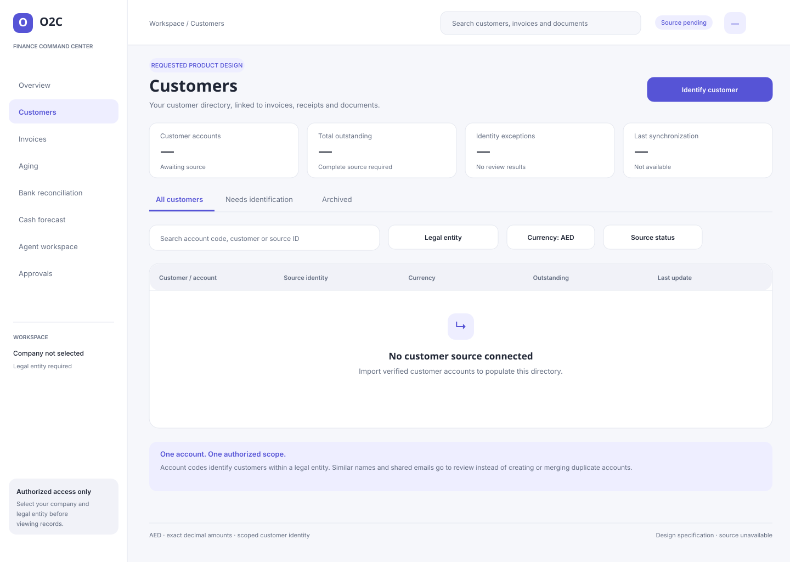
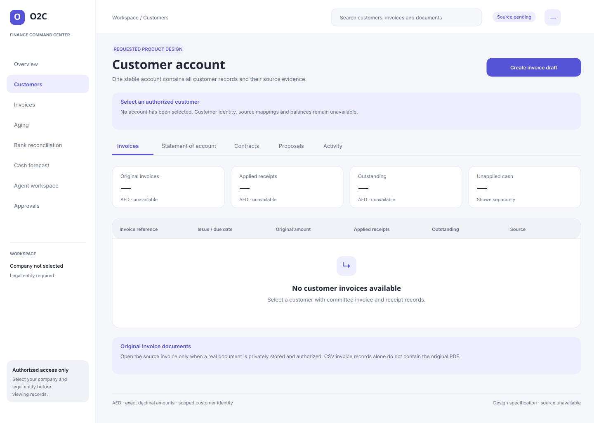
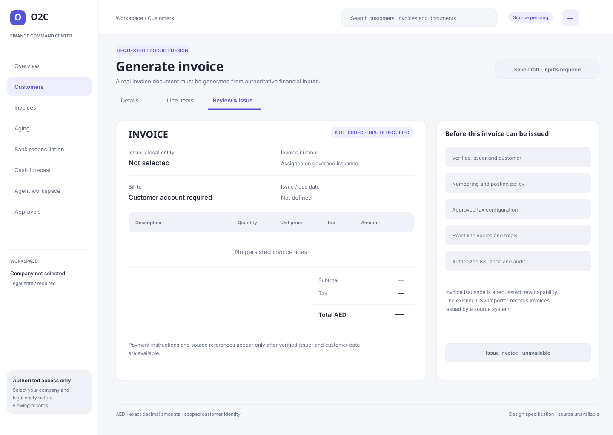
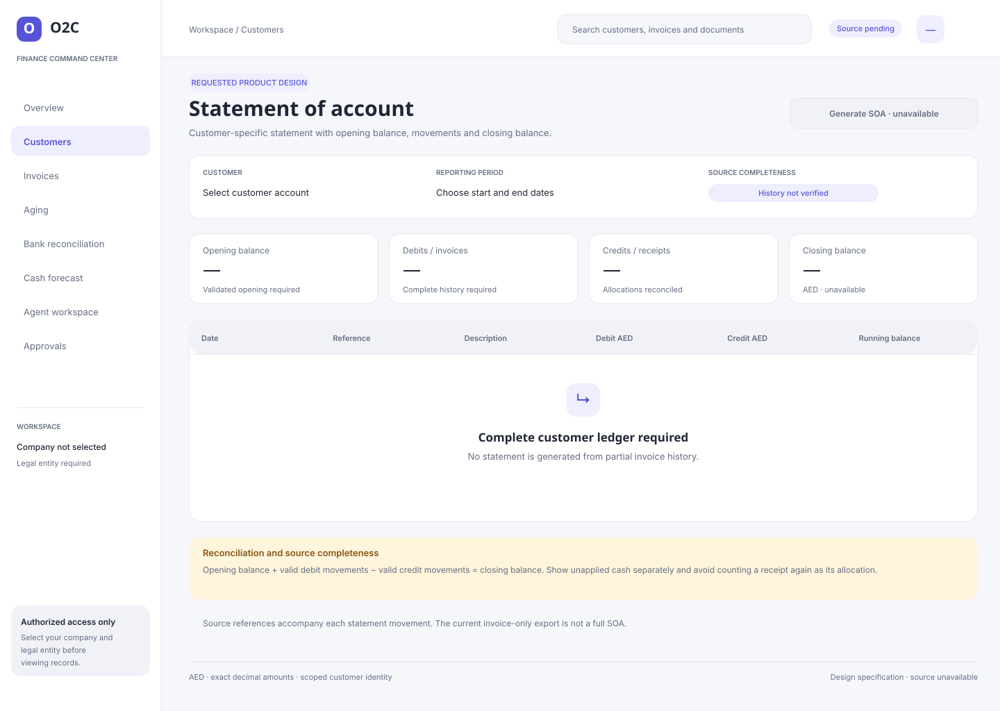
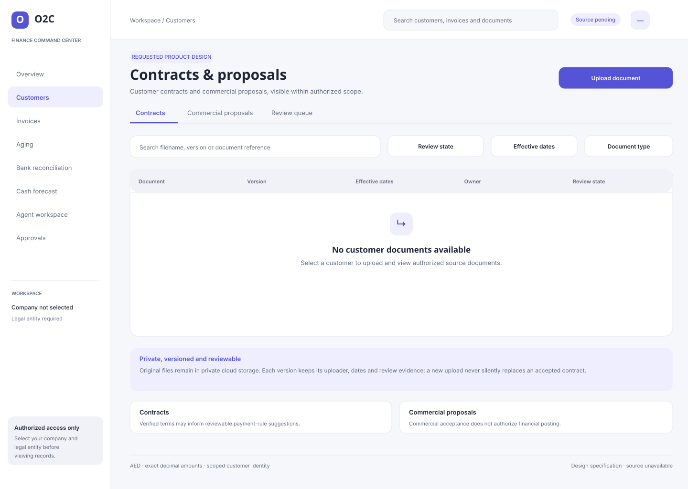
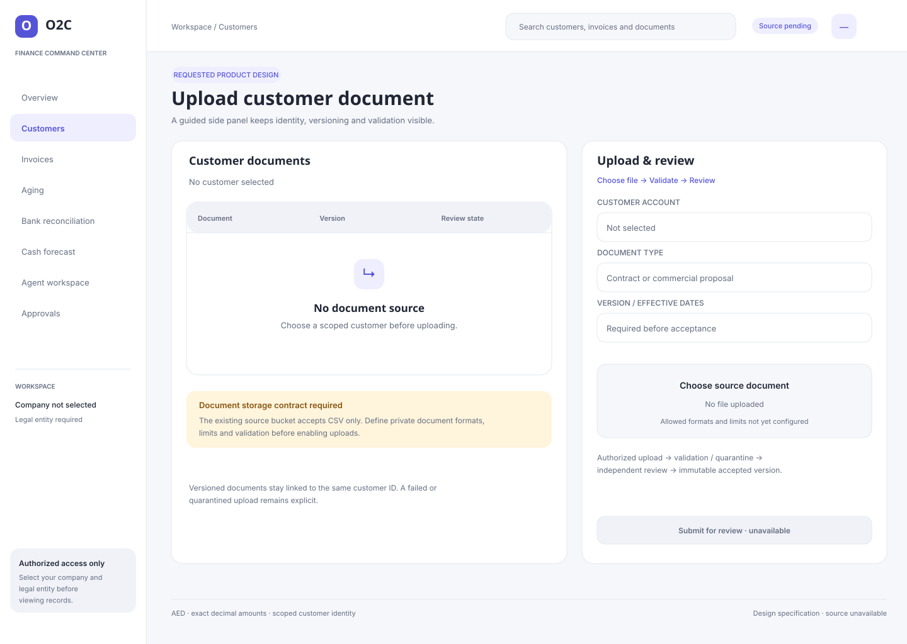
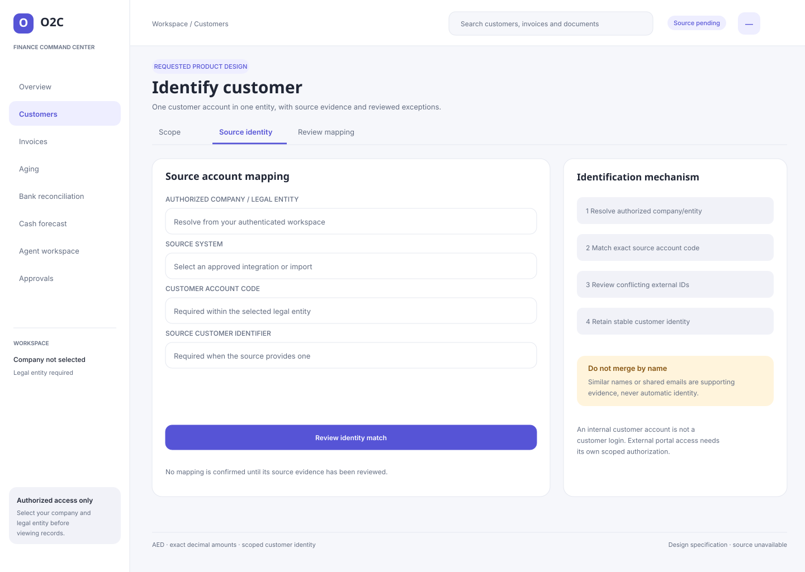
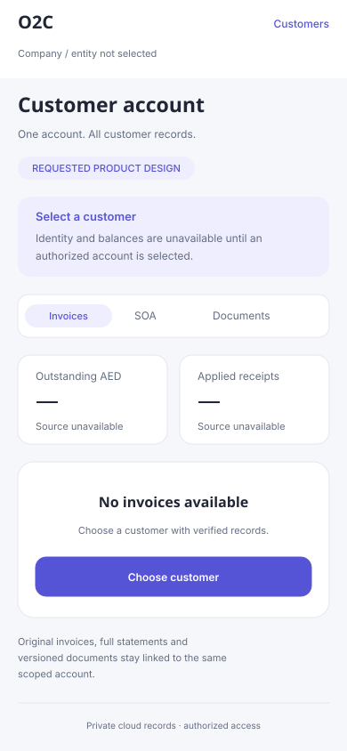
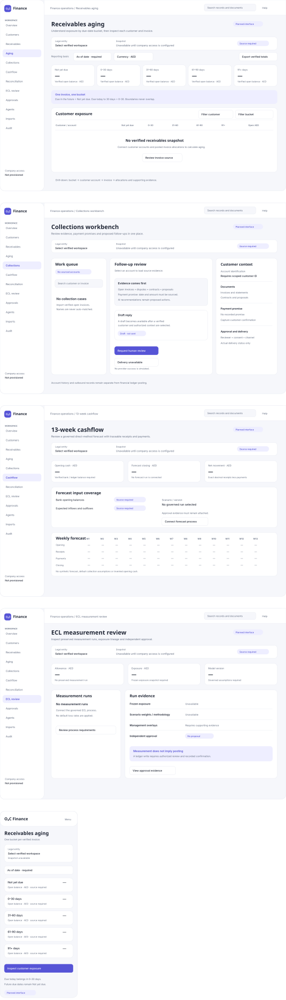
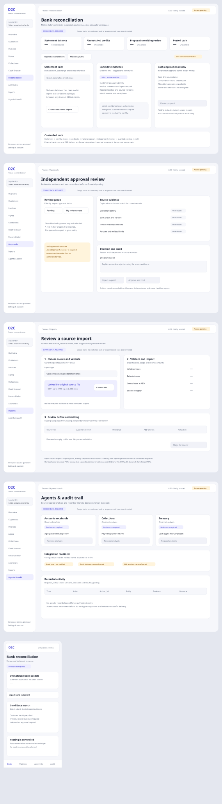

18 editable screens. These are design sources, with honest unavailable states; pending functionality and browser visual QA are recorded in the continuation status. No live financial records are embedded.









